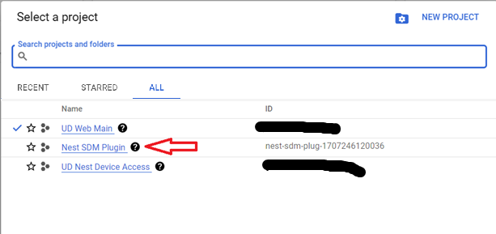

In order to use the Non-production (Beta) version of the NestSDM plugin, you must first create a Google Cloud project with the SDM and Pub/Sub APIs enabled, create and configure an OAuth Client for the Google Cloud project, and then create a Google Device Access project and configure it with the OAuth Client and enable events processing. Step-by-step instructions follow, but please review the following notes before getting started:
Before creating your projects, you must register for Device Access. Registration includes payment of a one-time fee (US$5) per account. Registration is done in the Google Device Access Console. You can access the Device Access Console here: Device Access Console. You will be asked to agree to the terms of service and such and then register and pay the fee if this is your first time in the Device Access Console.
Next, you need to setup the GCP Project to support Device Access, enable the SDM API, and create an OAuth client for the project(s). This is all done through a script on the Getting Started Guide webpage that runs a wizard that walks you through the details. Here is a step-by-step guide for using the wizard (you will want to keep this page open in a separate window/tab for reference):
Go to the Google Device Access Getting Started Guide webpage.
Scroll down to the button labeled "Enable the API and get an OAuth 2.0 Client ID" and click it:
In the first wizard screen, choose "+ Create a new project" in the "Select or create project" drop-down:
Enter "Nest SDM Plugin" as the new project name and click "NEXT":
Enter "Nest SDM Plugin" as the product name for the OAuth client and click "NEXT":
Select "Web server" from the "Where are you calling from?" drop-down and enter "https://my.isy.io/api/cloudlink/redirect" as the redirect URI, then click "CREATE":
Once the GCP Project and OAuth client are created, you can...
Next, access the GCP Project you just created in the Google Cloud Dashboard here: Google Cloud Console - Dashboard. If this is your first time in the Google Cloud Console, then the "Nest SDM Plugin" project you created may already be selected. If not, click the Project Selection dropdown in the top left corner of the Dashboard, and then select the newly created "Nest SDM Plugin" project from the project selection window:

Once the "Nest SDM Plugin" project is selected, copy the "Project ID" value in the "Project info" tile at the top left Dashboard display. This is the "GCP Project ID" you will need for the NestSDM plugin configuration.
The Nest SDM Plugin uses Push Events from Device Access to update state of devices in IoX. Push Events are enabled by the Google Cloud Pub/Sub API. However, the Pub/Sub API is not enabled for the GCP Project by default, so this must be done manually:
In the "Getting Started" tile of the Dashboard (2 or 3 down on the left), click the "Explore and enable APIs" menu item:
At the top of the "APIs & Services" page, click "+ ENABLE APIS AND SERVICES":
Next, on the "API Library" page, enter "Pub/Sub" in the search bar and then select the "Cloud Pub/Sub API" item in the search results:
On the "Cloud Pub/Sub API" page, click the "ENABLE" button to enable the API for the GCP project:
Returning to the "API & Services" page, select "Credentials" from the left column menu:
On the "Credentials" page, you should see a "Nest SDM Plugin" OAuth Client listed under the "OAuth 2.0 Client IDs" list. Click the "Download OAuth client" (download icon) out to the right of this list item to display the details for the "Nest SDM Plugin" OAuth client. Copy the "Client ID" and "Client secret" values from the display. You will need these for the NestSDM plugin configuration.
The GCP project is initially created with a publishing status of "Testing." In this status, your OAuth Authorization to the Device Access project will expire after 7 days and you will have to re-authorize. In order to prevent this, the status of the GCP project must be set to "In Production." Returning to the "API & Services" page, select "OAuth consent screen" from the left column menu:
On the "Oauth consent screen" page, click the "PUBLISH APP" button under the "Publishing status" section:
You will receive a confirmation dialog warning you that your project will be accessible to all users. While a user could conceivably authenticate to your project if they were given the authorization URL, this would simply expose their Google Nest Devices to your plugin, and wouldn't expose any information pertaining to your Google ID externally. Click the "CONFIRM" button on the confirmation dialog.
Finally (really?!?) you create a Device Access project. This is done in a wizard in the Google Device Access console. You will need to the Client ID of the OAuth client created above in Step 5 for this step:
Access the Device Access Console here: Device Access Console. Click on the "Create project" tile.
Enter a project name of "Nest SDM Plugin" and click the "Next" button.
Enter the OAuth client ID copied from the Google Cloud Console in Step 5 above and click the "Next" button.
Select "Enable" for the Events and click the "Create project" button.
Once the Device Access Project is created, you will see a tile for it in the Device Access Console:

Clicking on the "Nest SDM Plugin" project tile will display the details for the project. Copy the "Project ID" value for the project for the NestSDM plugin configuration. You may also want to verify that the proper OAuth client ID was supplied and that the Pub/Sub topic (for Events) shows as "Enabled."